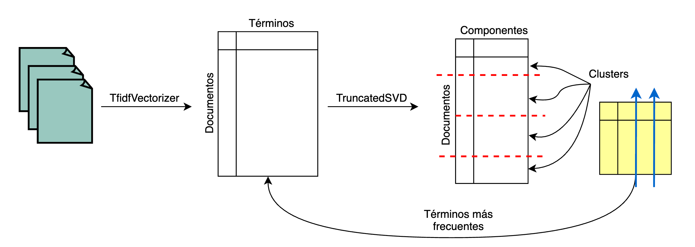

TruncatedSVD y Latent Semantic Analysis — 13:55 min
13:55 min | Última modificación: Septiembre 24, 2021 | YouTube
El objeto TruncatedSVD implementa una variación de la descomposición en valores singulares (SVD) que computa únicamente los \(k\) valores singulares más grandes.
Cuando esta metodología (TruncatedSVD) es aplicada a la matriz término-documento, es conocida como análisis semantico latente, ya que transforma la matriz a un espacio semántico de baja dimensionalidad.
Esta metodología es muy similar a PCA pero difiere en que la matriz de termino-documento no necesita ser centrada.

[1]:
#
# Carga de datos
#
from pprint import pprint
import numpy as np
from sklearn.datasets import fetch_20newsgroups
newsgroups = fetch_20newsgroups(
subset="all", categories=None, shuffle=True, random_state=12345
)
documents = newsgroups.data
target = newsgroups.target
n_groups = np.unique(target).shape[0]
print(" documents: {:d}".format(len(newsgroups.data)))
print("categories: {:d}".format(len(newsgroups.target_names)))
print()
pprint(list(newsgroups.target_names))
documents: 18846
categories: 20
['alt.atheism',
'comp.graphics',
'comp.os.ms-windows.misc',
'comp.sys.ibm.pc.hardware',
'comp.sys.mac.hardware',
'comp.windows.x',
'misc.forsale',
'rec.autos',
'rec.motorcycles',
'rec.sport.baseball',
'rec.sport.hockey',
'sci.crypt',
'sci.electronics',
'sci.med',
'sci.space',
'soc.religion.christian',
'talk.politics.guns',
'talk.politics.mideast',
'talk.politics.misc',
'talk.religion.misc']
[2]:
#
# Ejemplo del primer documento
#
print(documents[0])
From: grady@netcom.com (1016/2EF221)
Subject: Re: freely distributable public key cryptography c++ code: where?
Organization: capriccioso
X-Newsreader: TIN [version 1.1 PL6]
Lines: 20
Victor Iseli (victori@xetron.com) wrote:
:
:
: "Numerical Recipes in C"..Fortran..Pascal has a nice section on
: encryption and decryption based on the DES algorithm. There is
: also source code provided (I think some versions of this book are
: distributed with the source code on disk; the source code can
: also be ordered from the publisher).
:
: --Victor Iseli
: victori@xetron.com
Yes I benchmarked the DES implementation in the Recipes in C
book.. it is about 1 1/2 orders of magnitude SLOWER than the
Outerbridge/Karn/Gillogly/et al implementation.
It may be instructional, but it isn't very fast.
--
grady@netcom.com 2EF221 / 15 E2 AD D3 D1 C6 F3 FC 58 AC F7 3D 4F 01 1E 2F
[3]:
from sklearn.feature_extraction.text import TfidfVectorizer
vectorizer = TfidfVectorizer(
max_df=0.5,
max_features=1000,
min_df=2,
stop_words="english",
use_idf=False,
token_pattern=r"(?u)\b[a-zA-Z][a-zA-Z]+\b",
)
dt_matrix = vectorizer.fit_transform(documents)
dt_matrix.shape
[3]:
(18846, 1000)
[4]:
vectorizer.get_feature_names()[:10]
[4]:
['able',
'ac',
'accept',
'access',
'according',
'acs',
'act',
'action',
'actions',
'actually']
[5]:
from sklearn.decomposition import TruncatedSVD
from sklearn.pipeline import make_pipeline
from sklearn.preprocessing import Normalizer
truncatedSVD = TruncatedSVD(600)
normalizer = Normalizer(copy=False)
pipeline = make_pipeline(truncatedSVD, normalizer)
dt_svd = pipeline.fit_transform(dt_matrix)
dt_svd.shape
[5]:
(18846, 600)
[6]:
explained_variance = truncatedSVD.explained_variance_ratio_.sum()
print("Explained variance of the SVD step: {}%".format(int(explained_variance * 100)))
Explained variance of the SVD step: 87%
[7]:
from sklearn.cluster import KMeans
kmeans = KMeans(
n_clusters=n_groups,
init="k-means++",
max_iter=100,
n_init=1,
)
kmeans.fit(dt_svd)
[7]:
KMeans(algorithm='auto', copy_x=True, init='k-means++', max_iter=100,
n_clusters=20, n_init=1, n_jobs=None, precompute_distances='auto',
random_state=None, tol=0.0001, verbose=0)
[8]:
original_space_centroids = truncatedSVD.inverse_transform(kmeans.cluster_centers_)
order_centroids = original_space_centroids.argsort()[:, ::-1]
terms = vectorizer.get_feature_names()
for i in range(n_groups):
print("Cluster %d:" % i, end="")
for ind in order_centroids[i, :10]:
print(" %s" % terms[ind], end="")
print()
Cluster 0: com article just netcom like don know does distribution new
Cluster 1: university state article thanks virginia uiuc know new does computer
Cluster 2: cc columbia university posting host nntp article buffalo utexas rochester
Cluster 3: ohio state cleveland university cwru host posting nntp acs freenet
Cluster 4: posting host nntp university article distribution thanks know world like
Cluster 5: game team games year hockey university article think players play
Cluster 6: key clipper chip encryption com keys government escrow use public
Cluster 7: nasa gov article new drive space use know does org
Cluster 8: like just article good car know com think time don
Cluster 9: andrew cmu pittsburgh posting host nntp pa reply know com
Cluster 10: ca article university posting canada host nntp com bnr like
Cluster 11: cs article university computer science posting host nntp com dept
Cluster 12: ibm com austin posting article reply just like don nntp
Cluster 13: god jesus people believe com don does say bible think
Cluster 14: uk ac university article com posting host nntp just know
Cluster 15: windows dos com file university use ms know files does
Cluster 16: don know think just article com people like say time
Cluster 17: people article government just com right think israel don said
Cluster 18: com posting article host nntp distribution sun reply like know
Cluster 19: card video drivers university com cards know windows does posting